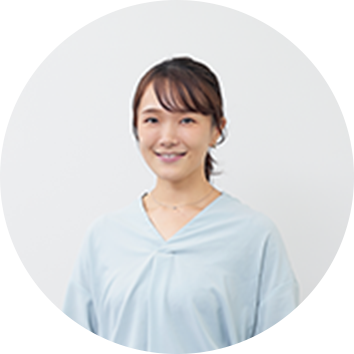
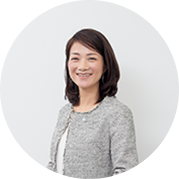

私は社会課題に関心があり、国連機関や専門機関などへの就職を念頭に、経済格差が著しいインドに留学したのですが、そこには経済的理由から学校に通えない子どもたちがたくさんいました。教育を受けられなかったことから、人としての未来を描く可能性や希望を奪われているだけでなく、それ以前に、人としての尊厳が奪われている実状を目の当たりにして、何よりも「教育」が必要であることを実感しました。ですからKUMONにおいても、いずれは途上国で普及に関わる仕事に従事したい、そのためにもまずは日本でしっかりと成果を、という考えのもとに今日へと至っています。
CROSS TALK02
ワークスタイル
座談会
東京神奈川本部 サポート部
神奈川サポートチーム（リーダー）
神奈川サポートチーム（リーダー）
井上 真佐代
2003年入社／人間科学部卒
松山事務局で3年ほど地区担当職として、続く神奈川リクルートチームで2年ほどリクルート職として勤務し、2008年より産育休を取得。2011年に復帰後は、首都圏リクルート開発チームで指導者募集の新規企画業務に従事するなどし、2019年より現職。約290名の社員がいる東京神奈川本部にて、組織のマネジメントをサポートする業務を担う。
東京EAST事務局1チーム
コンサルティング職
コンサルティング職
鈴木 宏和
2011年入社／国際総合科学部卒
入社後、新宿事務局にて教室実践研修などを経て、翌年からはリクルート職として勤務。2013年に宇都宮事務局に移りコンサルティング職として活動後、2016年よりGKUグローバル人材交流チームの一員として、シンガポール事務局、アメリカ・デトロイト事務局にて業務にあたる。その後、上野事務局を経て、2019年より現職。東京都の7区を管轄する事務局にて、現在は港区を担当。
神奈川事務局1チーム
コンサルティング職
コンサルティング職
加藤 美紀
2017年入社／経営学部卒
入社後、横浜事務局での教室実習・教室実践研修を経て、2018年よりコンサルティング職として同事務局（その後、神奈川事務局1チームに組織改編）に配属され、今日に至る。現在は横浜市神奈川区、横浜市栄区にある約40教室を担当。教室現場に訪問して現状を把握したり、発展に向けてのプランを練ったうえで指導者と面談したりといった業務にあたっている。
CHAPTER人を育てることがミッションのKUMONでは、
社員育成も公文式
皆さんはどんな考えのもと、キャリアを積まれてきましたか？
加藤
鈴木
私の入社当時のキャリアプランも、まさに加藤さんと一緒。ただ入社にいたる経緯が私の場合は少し変わっていて、高校3年間を全寮制の『スイス公文学園』で過ごしました。この経験から、就職活動においても「日本に留まらず広い世界で仕事がしたい」と思うようになったのですが、やはりどの企業よりも目指す姿というものを理解できたし、自分自身もその姿に一番ワクワクしたことから、KUMONに入社しました。そしてグローバルに公文式教育を広めていく仕事に携わるためにも、まずは国内でコンサルティングの仕事がしたいと考えました。実際は、リクルート職からのスタートでしたけど（笑）。
井上
お二人のインターナショナルに対して、私はドメスティックです。高知から上京して大学生活を送ったのですが、東京に出てきたからこそ故郷のよさに気づいて、地域社会に貢献できるような仕事がしたいと考えました。そこで複数の業界の会社説明会に参加するなかで、当時のKUMONの「地域の『教育ステーション』を目指す」というメッセージを見つけ、「これだ！」と思いました。KUMONの教室は日本全国、津々浦々にある、この会社で未来のある子どもたちの教育に関わる仕事をすることで、自分にも社会貢献ができ、生まれ育った故郷にも貢献できると考えたんです。そして最初は地区担当職（現・コンサルティング職）として松山事務局に配属され、ここで私はたくさんのことを学び、今に至る仕事の基盤ができたと思います。
鈴木
私もコンサルティング職として配属された宇都宮事務局で、先生との関わりの中で自身を省みるという経験を繰り返しながら、基本を身に付けることができたと思っています。
加藤
基礎、基本というお二人のお話、まさに私も体験しました。ある先生は、私がコンサルティング職になりたてだと知ったうえで、「もっと教室をよくしたい」という本質的な相談を寄せてくださいました。私は自分を頼ってくださったことがとにかくうれしくて、経験が浅いにも関わらず、すべてを自分で解決しようとして思い悩んでしまいました。そうしたら先輩が、「周りを巻き込んだらいいよ。あなたの悩みを一緒に考えていくことが、チームメンバーの学びや成長にも繋がるんだから」と声をかけてくれまして。そこからはまさにチームワークが発揮され、その先生の教室は、生徒の数も笑顔の数も増え、先生からも「加藤さんが担当でよかった」と言っていただき、涙が出るほどうれしい思いをしました。そうしたらチームの皆も私以上に喜んでくれて。もう二重に感動してしまいました。
井上
加藤さんのそのエピソードは、いかにもKUMONらしいですよね。社内ではよく「社員を育てるのも公文式で」と言っていますけど、人を育てることをミッションとしているKUMONでは、組織として人の成長を願うという風土が醸成されていますよね。
CHAPTER自身の変化が、
相手・チームの成長へ
皆さんにとって、ターニングポイントになった出来事とは何ですか？
加藤
私のターニングポイントはまさに先ほどの出来事で、ここから自分の仕事のスタイルも変わりました。いろいろなことを積極的にチームに発信できるようになり、周囲を巻き込んで日々の活動をしていくことができるようになりました。ただ、この質問については私からもぜひ、先輩お二人のお話をお聞きしたいです！
鈴木
では、まず私から。私はGPEPと呼ばれるグローバル人材交流チームでのミッションが、ひとつの転機となりました。ミッションとしては、日本のコンサルティング活動と同様のことを、現地社員とともに半年間にわたり実践していくわけですが、なかなか自分のアウトプットが成果につながりませんでした。私たちの仕事は、人が自発的に行動できるように関わることで、その人の変化や成長を加速させていく仕事なわけですが、最初のシンガポール事務局では、現地の指導者の行動が変わるほどの成果を生み出せませんでした。
加藤
それまでの国内での経験があっても上手くいかないものですか？
鈴木
そうでしたね。人が自発的に動くには、行動に働きかけるのではなく、意識に働きかけていく必要があります。「こうしたほうがいいよ」ではなく、「どうしたらいいと思う？」と投げかけ、一緒に掘り下げていくことが大事。その点、日本人同士だとツーカーで何となくわかりあえる部分がありますが、海外ではそれが通用しない。そのことを身をもって学んだことで、次のデトロイト事務局では、現地社員と一つひとつ確認しながら事象を掘り下げていきました。結果として、「指導者に課題を指摘すること」が自分の仕事だと思っていた現地社員が、「指導者を理解すること」に重きを置くようになり、それが担当する教室の先生の意識改革へとつながり、その現地社員のモチベーションも高まっていくという好循環を生み出すことができました。自分の姿勢を変えたことで、相手の変化を生み出すことができた、象徴的な経験でした。
井上
私の場合は、働き方を変化させていくという意味で出産・育児というのがひとつのターニングポイントでした。私は二人の子どもがおり、3年間の産育休を1回取り、復職しました。
加藤
休職、復職にあたっての不安や、復職後の仕事の中での難しさはなかったですか？
井上
休職にあたっては、上長や先輩社員の方々、先生方から、「仕事に育児経験がいきるよ」「安心してもどっておいで」とあたたかい言葉をたくさんかけていただいたのをよく覚えています。復職については、3年のブランクに対する不安は大きかったです。でも、育休中の社員が会社に足を運ぶ場や、復職した先輩のお話を聞く場面が複数回あったので、その機会には子どもたちと”出社”し、先輩のお話や姿から学び、自身の復職後のイメージを描き、準備をすすめることができました。復職後は、仕事と育児のバランスで日々葛藤をしてきました（笑）。家族の時間がもっとほしい、と思ったり、仕事にもっと挑戦したいと思ったり。結果的に、時短勤務制度を制度上限である下の子が小1まで取らせていただき、その後フルタイム勤務に戻りました。
加藤
両立は大変ではありませんでしたか？
井上
うまくいってると思える時もあれば、全然だめだ！と思い落ち込むときもあり、それを高速で繰り返しています（笑）。仕事においても育児においても、その繰り返しです。でも今感じているのは、今のKUMONはどんな状況でも個人の意識次第で能力を発揮しやすい会社である、ということです。この数年で人事制度の変更もあり、それぞれが、自分の置かれた環境や、今のように社会の環境にギャップが生じれば、見直し、変化に応じた働き方を実践することが可能になっています。その分、だれの責任にもできない、自分がいかに力を発揮するか、という責任は求められますが。
だからこそ私はやりたいことがある時やうまくいかず悩んだときには、「こうしたらうまくできるんじゃないか？」という発想を常に持ち、自分の責任であるということを意識しながら、働き方を変化させています。
CHAPTER誰かから与えられるのを
待つのではなく、
一人ひとりが仕事観を
進化させていく
これまでの経験を踏まえ、今後はどのようなキャリアを積んでいきたいですか？
鈴木
先ほどのお二人のお話の延長となりますが、私は2020年4月に一般総合職から地域限定総合職に職種変更をしました。業務内容は変わりませんが、転居を伴う異動がなくなりましたので、家族にとっての安心につながっています。私のところも夫婦共働きで2人の幼子を抱えているので、夫婦で協力しないと。というよりも、そもそも子どもは夫婦で育てるものだと、私なりの意識改革があっての決断でした。
井上
よくわかります。
鈴木
それで、これは仮の話ですが、もし3人目が生まれたとしたら、私も育休を取ってみようと思っています。KUMONでも育休を取る男性社員が増えていますし、これからの時代を見据えたとき、そうした経験も仕事に生きるのではないかと考えています。
井上
いいですね。育休取得期間も多様化していますし、男性の方の育休取得も増えていますよね。
加藤
今のお二人のお話に、私も勇気をもらいました。私も自分らしく生きていきたいし、KUMONで働きながらそれが実現できたらいいなと思っていますので。ちなみに私は今チャレンジしていることがありまして、フレックス制度や有休をうまく活用しながら、大学の通信教育学部で学生として学んでいます。発達心理学などを勉強しているのですが、Baby Kumonにもつながりますし、先生の教室での声掛けなどにも関係する分野だと感じています。
井上
すてきですね。
加藤
会社の外で得た知識や体験が仕事につながり、今は毎日がすごく楽しいんです。入社する前は、KUMONは塾の1つだと思っていたのですが、知れば知るほど、どのような子どもたちにも開かれた学習法だと実感しています。今、大学の他にNPO活動や地域コミュニティでも活動しているのですが、KUMONで子どもの成長に立ち会えたことは、社員としてだけでなく、私自身の人生にも大きな影響を与えてくれました。仕事とプライベートお互いが影響し合っていると思います。
鈴木
今度は私たちが勇気をもらいましたね。
井上
本当にそうですね。KUMONの働き方改革というのは、決して誰かから与えられるものではなく、自分たち一人ひとりが仕事観を進化させていこうとする意識改革として進められてきました。そして、自立した存在としてより高い価値を創出していくために、「可能性の追求」に挑む人の集まりになることを目指してきたわけですが、今の鈴木さんと加藤さんのお話をお聞きし、まさにこういうことなんだと理解が深まった気がします。このように、キャリアを超え、チームを超え、互いに刺激し合い、学び合える仲間がいるというKUMONの風土はいいですよね。今日はお二人とお話ができて、本当によかったです。
キーワードから探す
気になるキーワードからコンテンツを検索できます。
閉じる